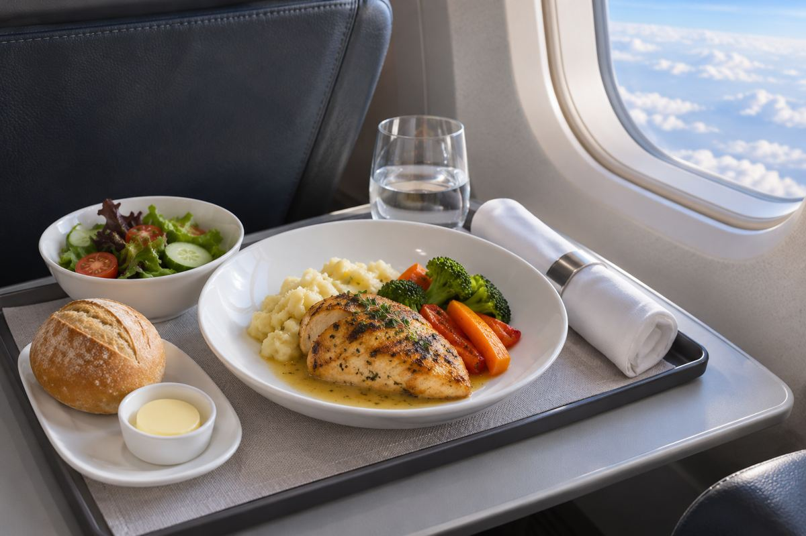

항공 / EXPLAINED
카타르항공 기내식 사전 선택, 2시간 이상 중거리편으로 확대
퍼스트·비즈니스 승객은 확정 예약에서 출발 14일 전부터 24시간 전까지 메인 요리를 고를 수 있다.

카타르항공은 11월 10일 퍼스트와 비즈니스 클래스 기내식 사전 주문을 2시간 이상 중거리편으로 확대했다고 발표했다. 대상 승객은 항공사의 웹사이트나 앱에서 예약 관리 메뉴를 열어 메인 요리를 미리 선택할 수 있다. 선택 기간은 출발 14일 전부터 24시간 전까지다. 발표는 서비스를 확대했다는 현재형 설명이며 전 노선의 별도 시행 날짜표는 제시하지 않았다.
카타르항공은 도하 하마드 국제공항을 중심으로 국제선을 연결한다. 한 번의 예약에 장거리와 비교적 짧은 연결편이 들어가는 여정이 많아, 각 구간에서 이용할 서비스가 달라질 수 있다. 이번 발표는 기존의 사전 선택 범위를 더 짧은 항공편으로 넓힌 것이다. 확정 예약과 대상 객실이라는 조건이 붙으며, 좌석을 조회하는 단계와 실제 항공권 발권 후의 예약 관리 단계는 이용할 수 있는 정보가 다르다.
주문하는 것은 탑승편의 일품요리 메뉴 중 메인 코스다. 일품요리는 미리 정한 세트 전체만 받는 방식과 달리 메뉴에서 개별 요리를 선택하는 형식이다. 일부 목적지에는 ‘Flavours to Fly For’ 컬렉션의 추가 요리도 제공한다고 회사는 설명했다. 모든 목적지에서 추가 요리가 동일하게 나오는 것은 확인되지 않았다. 실제로 고를 수 있는 메뉴는 자신의 예약에서 확인하는 것이 가장 구체적인 기준이다.
시간 제한을 여행 일정에 넣기
24시간 전 마감은 공항 체크인 마감과 다른 절차다. 예를 들어 금요일 15시 출발편이라면 사전 선택은 목요일 15시 이전이라는 시간 기준을 적용하게 된다. 날짜만 보고 전날 밤에 메뉴를 정하려 하면 이미 선택 시간이 끝날 수 있다. 앱이 보여 주는 마감 시각을 확인하면 시차가 있는 출발지에서도 혼동을 줄일 수 있다. 출발 직전 항공편을 바꾸는 경우에는 바뀐 편의 선택 가능 여부를 다시 봐야 한다.
기내에서 선호 메뉴가 남아 있는지 기다리는 대신 미리 의사를 전달할 수 있다는 점이 승객에게 의미가 있다. 편집부의 해석으로는 연결편까지 포함해 서비스 준비를 미리 끝낼 수 있지만, 이 자료만으로 재료 변경이나 운항 변경 때의 제공 보장 조건을 알 수는 없다. 의학적 식이 제한이나 알레르기가 있다면 일반 메인 요리 선택과 별도의 특별식·안전 안내를 함께 확인할 사안이다. 메뉴 이름만으로 재료 전체를 판단해서는 안 된다.
예약 관리에 메뉴가 표시되지 않으면 먼저 해당 승객의 객실과 확정 상태, 출발까지 남은 시간을 확인할 수 있다. 회사가 제시한 범위 안에서 선택이 가능한지 점검하는 과정이다. 예약을 담당한 여행사가 있다면 항공사 예약 번호를 받아 같은 화면에서 확인할 수 있는지도 살펴볼 수 있다.
기내식 선택을 저장한 뒤에는 예약 관리에 어떤 메뉴가 표시되는지 확인하는 편이 좋다. 동행자가 있으면 각 승객에게 선택이 적용됐는지도 살펴야 한다. 이런 확인은 항공권 등급이나 좌석 번호 변경과는 다른 서비스 항목을 다룬다. 발표에 별도 추가 요금이나 전 노선 예외 목록은 없어, 실제 예약 화면의 제공 항목을 기준으로 판단해야 한다. 서비스 확대의 범위는 객실, 비행시간 조건, 예약 상태와 선택 기간을 함께 읽을 때 정확해진다.